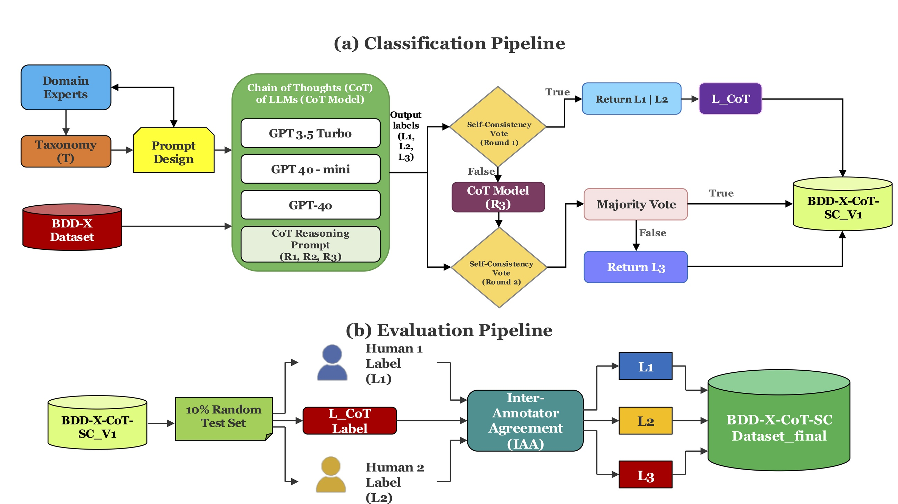
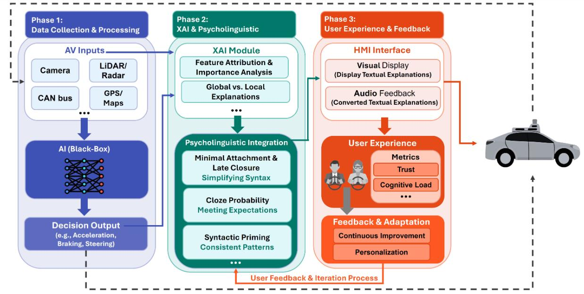
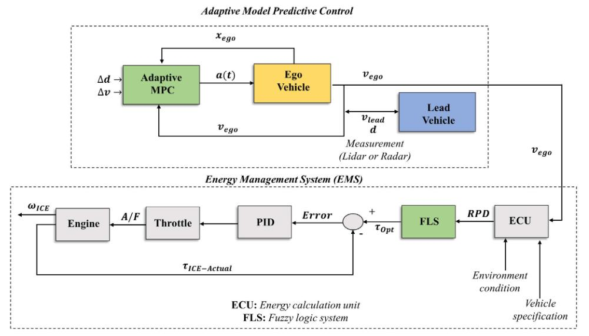
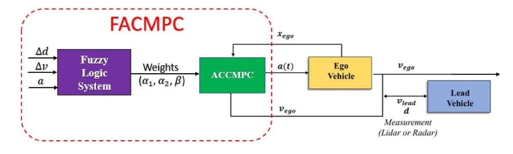

Ashkan Y. Zadeh
PhD Candidate in Computer Science
ARC Training Centre for Automated Vehicles in Rural and Remote Regions (AVR3)
Queensland University of Technology
ARC Training Centre for Automated Vehicles in Rural and Remote Regions (AVR3)
Queensland University of Technology
I am a PhD candidate at Queensland University of Technology, supervised by Dr. Xiaomeng Li, Prof. Andry Rakotonirainy, Prof. Ronald Schroeter, and Prof. Sebastien Glaser.
My research develops human-centric explanation models for Automated Vehicles (AVs) that bridge AI decision-making with human understanding. I integrate Human-Centred Artificial Intelligence (HCAI), Explainable AI (XAI), and Natural Language Processing (NLP) to enhance transparency and trust in autonomous driving systems.
News
-
Jan 2025Joined IEEE Consumer Technology Society as Automotive CE Applications Technical Committee Member
-
Sep 2024Joined IEEE Vehicular Technology Society AdHoc Committee on Autonomous Vehicles
-
Aug 2024Received IEEE Scholarship for Academia-Industry Summer School on "Towards Human-Centric AI-empowered Autonomy" at Swinburne University of Technology
-
Oct 2024Paper accepted to IEEE Transactions on Intelligent Transportation Systems!
-
2023QUT Runner-Up in 2023 Visualise Your Thesis Competition
Research Interests
Explainable AI
Automated Vehicles
Human-Centred AI
Natural Language Processing
Large Language Models
Human-Machine Interaction
Machine Learning
Education
-
PhD in Computer Science2023 - PresentQueensland University of Technology, Brisbane, AustraliaThesis: A Model for Generating Human-Centric Explanations for Automated Vehicles
Supervisors: Dr. Xiaomeng Li, Prof. Andry Rakotonirainy, Prof. Ronald Schroeter, Prof. Sebastien Glaser
Research Centre: ARC Training Centre for Automated Vehicles in Rural and Remote Regions (AVR3), formerly CARRS-Q -
MSc in Mechanical Engineering (Dynamics & Control Systems)2019 - 2022University of Guilan, IranThesis: Safety and Energy Management System Control of Hybrid Autonomous Vehicles. Ranked within top 15% GPA among graduating class
-
BSc in Mechanical Engineering2013 - 2018Islamic Azad University, IranFinal Project: Mechanical Design of a Robotic Manipulator Arm with SolidWorks
Selected Publications
-

X-Blocks: Linguistic Building Blocks of Natural Language Explanations for Automated VehiclesKnowledge-Based Systems, Elsevier (Submitted, 2026)
-

PsyLingXAV: A Psycholinguistics Design Framework for XAI in Automated VehiclesXAI-2025 (The 3rd World Conference on eXplainable Artificial Intelligence)
-

Integrated Intelligent Control Systems for Eco and Safe Driving in Autonomous VehiclesIEEE Transactions on Intelligent Transportation Systems, 2024
-

Fuzzy Adaptive Cruise Control with Model Predictive Control for Automated DrivingEngineering Applications of Artificial Intelligence, 2024
Skills
Programming
Python
MATLAB
Computational
Machine Learning
Neural Networks
NLP
LLMs
Fuzzy Logic
Evolutionary Algorithms
Tools & Technologies
Simulink
Linux
ROS
Git
Pandas
NumPy
Scikit-learn
Experience
-
Automotive CE Applications Technical Committee MemberJan 2025 - PresentCommittee member for automotive consumer electronics applications
-
AdHoc Committee on Autonomous VehiclesSep 2024 - PresentCommittee focused on autonomous vehicle technology standards and advancements
-
TutorFeb 2024 - PresentTeaching "EGB 103 - Computing and Data for Engineers" and "EGD 103 - Computing and Data for Engineers" at QUT College
-
Doctoral ResearcherJun 2023 - PresentARC Training Centre for Automated Vehicles in Rural and Remote Regions (AVR3), formerly CARRS-Q, QUTThesis: A Model for Generating Human-Centric Explanations for Automated Vehicles. Supervised by Dr. Xiaomeng Li, Prof. Andry Rakotonirainy, Prof. Ronald Schroeter, and Prof. Sebastien Glaser.
-
Peer ReviewerApr 2022 - PresentReviewing papers for IEEE Transactions on Intelligent Transportation Systems and IEEE Access
-
Python DeveloperNov 2022 - Mar 2023HeyvaAIResponsible for coding, deploying, and debugging development AI projects on server-side applicationsR&D Expert in Autonomous VehiclesNov 2022 - Dec 2022Cheetah Research Center, University of TehranResearch and development at the Autonomous Vehicles Research Institute (Cheetah)
Achievements & Awards
-
IEEE Scholarship2024Recipient of IEEE Academia-Industry Summer School (AISS) on "Towards Human-Centric Artificial Intelligence (AI)-empowered Autonomy", Swinburne University of Technology, VIC
-
QUT Postgraduate Research Awards2023 - 20242023 ARC Postgraduate Research Stipend, 2024 QUT Postgraduate Research Award (QUTPRA)
-
QUT Runner-Up: Visualise Your Thesis Competition2023Runner-up in the 2023 Visualise Your Thesis Competition, and Faculty of Health Finalist
-
CARRS-Q Team Member2023Nudgeathon 2023 (Behavioural Economics Competition), Brisbane, QLD
-
Top 15% Student2019 - 2022Ranked within the top 15% GPA among the graduating class in the Dynamics and Control division, University of Guilan, Iran
-
Data Science Badges2020IBM Data Science Professional Certificate